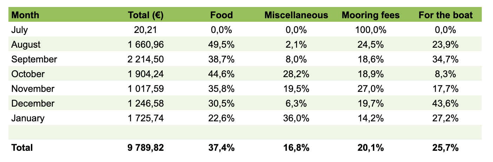
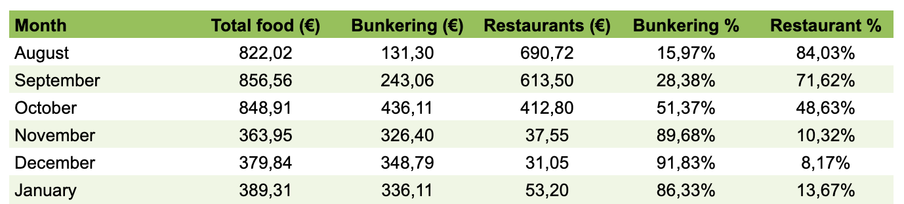
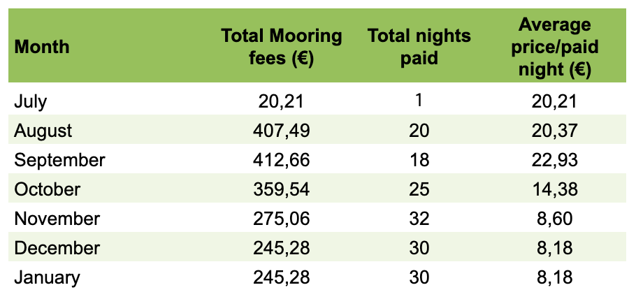
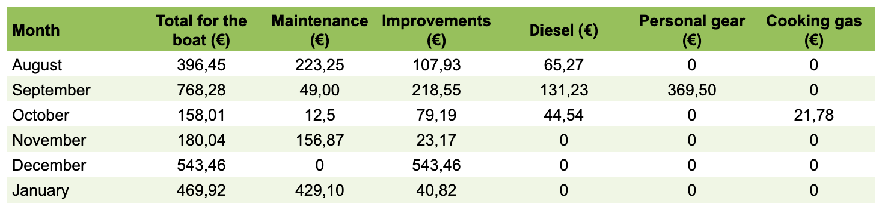
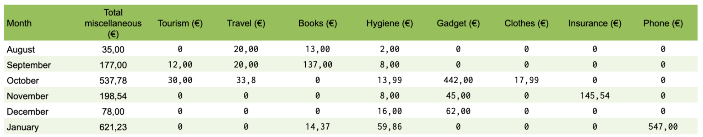

Our expenses the first 6 months
When we decided to change our lives from working 8 to 5 and doing what most people do, to getting a boat and sail away, one of the first things we tried to figure out was how much does the sailing life cost.
We found a few youtube channels and blogs from sailors that share quite a lot of information about their expenses that gave us some ballpark figures somewhere around 1000-2000 €/month. That was great because then we had something to start our planning from. But in the end it all depends on so many different things, how big is your boat and what shape is it in, do you do all or most of the work on the boat yourself or do you pay for someone else to do it, do you anchor a lot or do you always go into a marina, do you eat out a lot or do you cook most of you meals on the boat, when you get to a new place do just have to check out the shops and buy something to remember that particular place or do you only buy stuff you really need etc.
If you’re not about to start your planning for a new life on a sailboat this post might not be that interesting for you and it’s totally OK if you want to move on to something else. But for those that are in the same situation that we were when we started our planning mid 2018, hungering for this kind of information, we want to share the information we have gathered so far and hope that we can contribute to someone else getting their plans going.
Before we dive into all the numbers it’s relevant to let you know that our expenses are for two people and the boat is a B31 from 1978, it’s 31 foot or 9,33 meters long and 2,78 meter wide.
Since we left Sweden on the 31st of July 2020 we have registered all our expenses into a google sheet. From 31st of July 2020 until 31st of January 2021 we have spent a total of 9790 €. We have divided it into four main categories:
- Food – 3661 €
- Mooring fees – 1966 €
- For the boat – 2516 €
- Miscellaneous – 1648 €

Total cost per month in € and each category in percentage of total cost per month.
We are going to walk you through the different categories and try to do some kind of analysis. If you have any questions post them in a comment below and we will answer if we can.
Food
When we register food expenses we define if it’s a restaurant expense or if it’s bunkering (groceries that we bring to the boat).
Our total food costs during the first six months (August 2020 – January 2021) was 3661 €, that gives a monthly average of 610 €/month. When we analyze the costs it is pretty obvious that we spent quite a lot of money on food the first three months (average 842 €/month) and a lot less the last three months (average 378 €/month).
 Monthly food costs split into bunkering and restaurants in € and percentage of month
Monthly food costs split into bunkering and restaurants in € and percentage of month So why is there such a difference in the food costs from the first three months to the following three months? In the beginning everything was new and exciting and we had a bit of a vacation feeling and when we are on vacation we usually treat ourselves with nice food at restaurants. At the same time it was also quite tiring being out sailing the entire day from early morning until late afternoon or early evening, quite often beating against the wind, at least the first couple of months. Arriving to a marina a bit tired knowing that we were going to move on the next morning going to a restaurant instead of cooking was an easy way to get a nice and relaxing evening.
However since we settled down in Gijon mid October we have only had one restaurant dinner and a coffee, churros or a glass of wine here and there. The dinner was really expensive though since it was at the Michelin star restaurant situated right in the marina. We just had to try it. But apart from that every meal has been prepared and eaten on the boat. When we feel lazy or if we want a treat we buy ready made pizza at the grocery store and since we don’t have an oven we heat the pizza on the barbecue. One of the reasons that we went from eating out a lot to not eating out at all was of course the situation with Covid-19 that forced the restaurants to close down for a while. But we also didn’t mind spending time on grocery shopping and cooking when we didn’t have to hurry on to the next harbor the next day.
When it is time to move on again we will probably eat at restaurants more often again but not to the extent we did in the beginning. Now we have worked out a good routine for cooking on the boat and we have a few quick and easy dishes that I think we would prefer instead of going to a restaurant if we arrive late and are really tired. One thing that we’ve learned during our first six months of this new life is that unless we really have to be somewhere at a specific time for some reason the default “setting” should be not to hurry but rather to slow down. If we manage to live by this when we set sail again we hopefully only rarely find ourselves in the situation where dinner at a restaurant is a solution to the combination of bad planning, being tired and having to get up and move on early the next morning.
Mooring fees
For the first six months we paid for 156 nights and spent a total of 1966 € that is an average of 12,60 €/night. The cheapest marina was in Brunsbüttel at the end of the Kiel canal where we paid 8 € and the most expensive one was Roscoff in France where we paid 30 €/night. Since October it has been low season prices in all marinas and for the last three months we have paid a really good monthly fee in Gijon and of course that contributes to lower the average price/night quite a lot.

Total mooring fees per month and average fee per paid night
The bigger the boat the more expensive the mooring fees get. Our boat is 9,33 m long so most of the time we get the 9-meter price in the marinas. Some marinas have a price list that goes directly from ≤ 8 meter to ≤ 10 meters and then it gets a bit more expensive. There seems to be a magical limit at 12 meters. If your boat is below 12 meters the prices are still reasonable, at least in the marinas we’ve been to so far. Most marina fees are based on the length of the boat but since we came to Spain we’ve been to a few marinas that charge you per m2. For us with quite a narrow boat (2,78 m) it hasn’t been too bad but with just a slightly longer or wider boat the prices increase quickly. The prices also varies with the season, most marinas have a high and a low season and some also have a mid season. If you know what marina you want to go to you can usually find their prices on their website or email them and ask. Another way if you want to plan ahead a bit is to download the app Navily and put your boat data into the app and then browse the map. All marinas with a blue marina symbol are “navilymarinas” and almost all of them show their price directly in the app. It’s a good way to compare different marinas in the same area and to get a feeling for what a normal price would be in the area.
If you take a closer look at the paid mooring fees in our expense sheet you can see that for example in September we only paid for 18 nights. The reason for not paying for a total of 12 nights in September is a combination of spending about five nights sailing and two nights at anchor and the remaining five nights are because sometimes we are a bit naughty… If we arrive late to a marina and the harbor office isn’t open then we aren’t always very specific when we go there to pay the next day. Quite often we do say that we arrived last night but if they don’t charge us for that first night we don’t ask them to. And sometimes we have decided to stay one night longer than we first planned to, if this decision is made after the harbor office has closed and we have to leave really early the next day before they open it is difficult to pay for the last night. Of course we could have emailed them afterwards and asked for an account number to pay to but so far we haven’t felt the need to do so.
Some marinas have “deals” where you can get an extra night for free if you stay for a few nights and sometimes it could be better to ask for the price/week instead if you plan to stay a bit longer even if don’t stay the whole week.
For the boat
A common recommendation when it comes to boat costs is to have a yearly budget of 10-20 % of the value of the boat. If we keep the same pace on our boat expenses the next six months as we did the first six months we will definitely exceed that. During the first six months we spent 2516 € on the boat. However about 40 % of that was improvements and the need for improvements will hopefully be less and less with time. We have split the costs into five subcategories: maintenance, improvements, diesel, personal gear and cooking gas.

Monthly total costs for the boat and split into subcategories
Maintenance
The amount of maintenance needed will differ from one boat to the other and from time to time. In our case we have an old boat but we did quite a lot of work on it before we left Sweden. But even if you fix everything that you know is or could become a problem there is always things that will need maintenance because of wear and tear or maybe just because of the famous Murphy’s Law.
We’ve had some trouble with the seawater cooling system for the engine which has been quite annoying since we haven’t really found something that has been obviously wrong. We also had some leakage from the propeller shaft even if we put on a brand new seal for it before we left Sweden. At first we thought it had to be worn in a bit and get some more grease for it to work properly but after quite a lot of patience with it we decided to buy a different one instead. To stay on the subject of leakage, the water pump in the galley also started to leak. We couldn’t get hold of a set of new gaskets for it so we had to buy a new one. To put in the new stuffy box for the propeller shaft and to change the through hull for the seawater intake we had to haul out the boat. When we had it on land we took the opportunity to put some antifouling paint on where it had worn off.
Total amount spent on maintenance was 870 € and the major expenses were:
- Haul out and hull work – 414 €
- Stuffy box for propeller shaft – 143 €
- Impellers and ridge for the impeller housing – 125 €
- Water pump for the galley – 90 €
Improvements
The main improvements that we have done have to do with humidity and heating. In late September we bought a dehumidifier and that was really great, from one day to the other we got rid of the problem with damp bed sheets and clothes. This was not a problem in the beginning when the weather was much warmer and dryer. When the temperature started falling a bit we also bought a small electric heater. We did bring a Webasto diesel heater but we didn’t mount or install it before we left. To do that we had to buy a few bits and pieces like an exhaust pipe and a through hull for the exhausts, a few meters of heat pipe and a carbonmonoxide detector. Some of the stuff for the heater we could get quite cheap but for other pieces we bought original Webasto stuff and they are really expensive. One improvement that hasn’t been executed yet is painting the deck with KiwiGrip anti-slip paint but it’s on the list of things to do so we got the paint from SVB24 when we ordered stuff for the heater. Total amount spent on improvements was 1013 € and the major expenses were:
- Stuff for the diesel heater – 330 €
- KiwiGrip anti-slip paint – 260 €
- Dehumidifier – 187 €
- Water hose 30 m, nut to water tank sensor, water display gauge – 100 €
Diesel
We have used a lot more diesel than we thought that we would. Well, we didn’t really have an estimate on how much diesel we were going to use before we left but we have motored a lot more than we expected. When we left Sweden we had a full tank (30 liter) and two 10 liter diesel cans. In Roscoff when we planned to cross the Bay of Biscay we spent 20 € on another two 10 liter diesel cans. One of them has now been converted to a diesel tank for the heater.
In total we have bought 172 liters of diesel and for that we paid 221 € and that gives an average of 1,28 €/liter.
When we exited the Kiel canal a lot of people told us to go to Helgoland to fill up our diesel tanks because the diesel is really cheap there. We didn’t think it was worth it with our small diesel tank but for those with larger tanks it might be a clever stop to do.
Personal gear
Maybe it’s strange to put personal gear down as a boat cost but the things we put in this subcategory are things that we wouldn’t buy or use if we didn’t have a boat. So far we have only made one purchase in this category and that was a pair of Musto boots for Tony since his old boots didn’t keep his feet dry.
Total amount spent on personal gear was 370 € (and he love the boots)
Cooking gas
The last subcategory is for cooking gas. We have two 2,75 kg Campingaz bottles and so far we have changed one bottle but the second one will probably need to be changed soon. Apart from the gas stove we also have a portable one pot induction stove and when we are in a marina for more than a day or two we usually plug into the electricity on land and do most of the cooking on the induction stove.
Total amount spent on cooking gas was 22 €
Miscellaneous
This category is everything that doesn’t fit into the other categories but to keep some kind of track of it we have split it into the following subcategories: tourism, travel, books, clothes, hygiene, gadgets, insurance and phone. Total amount spent on miscellaneous was 1648 € split into the different subcategories it was as follows:
- Tourism – 42 €
- Travel – 74 €
- Books – 164 €
- Clothes – 18 €
- Hygiene – 108 €
- Gadgets – 549 €
- Insurance – 146 € -Phone – 547 €
 Monthly total miscellaneous costs and split into subcategories
Tourism, travel, books and clothes
Tourism, travel, books and clothes are pretty straight forward. Tourism is when we pay an entrance fee to a museum or an aquarium or some other “touristy” place. Travel is train or bus tickets, taxis, bike rentals etc. Books is any books that we buy. Clothes is the clothes we buy that are not boat specific.
Hygiene
Hygiene is when we have to pay for the shower in a marina or when we do laundry. We also register when we buy face masks due to Covid-19 restrictions in this subcategory. Things we buy at the pharmacy are also registered as hygiene. It’s really convenient that in Spain where we are at the moment we can buy the drugs that we would need a prescription to get in Sweden straight over the counter. I guess you can’t buy just any drugs without a prescription but the stuff we need is quite common and nothing “heavy” and this saves us from maybe having to travel back home to Sweden in these strange times just to go to the pharmacy. Now we can wait until the world isn’t upside down and go back for a proper visit when we feel like it instead.
Gadgets
Gadgets are mostly electronic stuff like a WiFi extender (438 €), Bluetooth headphones, LED lights and controls from Ikea etc.
Insurance
Insurance is non boat insurances like home insurance (146 €/year) that we need to cover some of the items that wouldn’t be covered by the boat insurance, it could also be health and travel insurance.
Phone
The phone category is also kind of obvious and that is of course our phone bills. So far we have a really good set up when it comes to phone and internet. We pay a total of 547 €/year for both our accounts. We are included in a family plan with unlimited calls, texts and internet. However when you go abroad to another EU country or to other specific countries that are listed in the plan the internet is limited to 100 GB/month for the whole family but that is still quite a lot.
Normally you can use your plan abroad for four months without any extra charge and then you have to go back home to Sweden and use it there for some time before you can go abroad and get four new months without extra charge. I think this is some kind of EU agreement because it seems to be the same rule with all the phone companies in Sweden. So far our phone company hasn’t noticed that we have been abroad for more than four months, we don’t do a lot of calls and we don’t max out the data but if we did I think they would probably notice us. When there is an OK wifi connection we always try to use that to stay under the radar of the phone company.
If or when they decide that we have to go back home for a while to be able to keep using our plan abroad there is a plan B that was actually suggested by the phone company itself. Ask the family administrator to close down our accounts and start up new accounts for us within the family and then we can start over with four new months. Since many phone companies have started to use e-sims, switching to a new account will hopefully be sort of instant rather than having to wait for a physical sim card being mailed from Sweden. The only downside with this solution is that every time we start a new account we will get a new phone number but with some planning that will be manageable.
So, did we stay on budget?
We didn’t make a budget for each category but the overall plan was to not spend more than an average of 2000 €/month. With a total amount of 9790 € for six months we get an average of 1632 €/month. The cheapest month was November with 1018 € spent and the most expensive month was September with 2215 € spent. We feel quite comfortable with that we will be able to stick to the plan with 2000 €/month as an average. Every month that we spend less than that gives us a buffer for more expensive months. And there will definitely be more expensive months. We will probably spend a few months in the Mediterranean this summer and the mooring fees there are really expensive but hopefully we will be able to anchor more. But eventually we will need to get new sails or fix something expensive on the boat so being able to build up a buffer is quite nice.
How do we earn our money?
When we left Sweden we had a chunk of money in the bank to get us through the first year. We also have another chunk of money that we work with on the stock market. This is how we plan to make a living, by growing the second chunk of money more than what we spend. We both do some trading but Tony is by far the most active one.